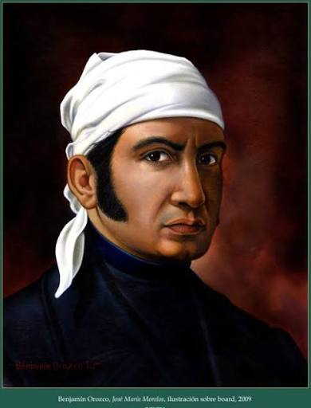
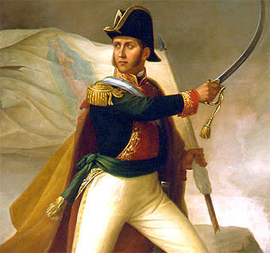

PERSONAJES ILUSTRES

Miguel Hidalgo
Padre de la PatriaSacerdote y militar novohispano que inició la primera etapa de la Guerra de Independencia con el histórico "Grito de Dolores" el 16 de septiembre de 1810.

José María Morelos
Siervo de la NaciónLíder militar y político que dirigió la segunda etapa de la independencia. Redactó los "Sentimientos de la Nación", sentando las bases del Estado mexicano.

Josefa Ortiz
La CorregidoraPieza clave en la conspiración de Querétaro. Su oportuno aviso al descubrirse la conspiración permitió que se adelantara el levantamiento de independencia.

Ignacio Allende
Capitán GeneralMilitar insurgente novohispano que coordinó las primeras acciones del ejército insurgente junto a Miguel Hidalgo durante los primeros meses del movimiento.